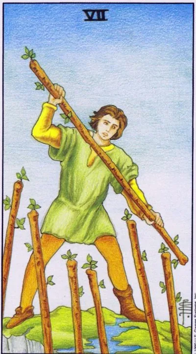

Minor Arcana · Wands
VIISeven of Wands
One against six at the height of the position: defense of what has been achieved, character and readiness to defend their own to the end.
Archetype and core meaning
The young man on the high rise is fighting back with a pole from the six wands rising from below, and he is at the height, and therefore in the minority: the higher the position, the more people want to challenge it. The seven describe the defender: criticism flies, competitors persevere, but the ground underfoot is hard.
The card respects that weary courage: the hero fights not to capture, but to hold the house, the project, the principles, the boundaries. The opponent is strong, but attacks from below, and you see the whole field. The discipline of defense -- priorities, rest between battles, and refusing to surrender the main thing for petty concessions -- will help to withstand.
Daily life
Defense Day: Family comes in with advice, vendors impose services, neighbors occupy parking lots. Choose the principle and stand up calmly; the ability to say no without excuses is more valuable today than eloquence. In the evening, be sure to recover - the defender needs sleep.
Work and career
You're being tested for strength: a colleague is pointing at your site, a client is haggling, the audience is criticizing. The position is stronger than it seems — you know the case from the inside, and they look from the doorstep. It's good to protect the budget, authorship, terms of the contract: give in to the secondary, hold the main thing — the onslaught will drown.
Relationships
Relationships are under pressure from outside: family members question their choices, exes remind themselves, life tests their strength; not rightness, but union, standing next to your partner against your circumstances, not above them; and in systematic "education," the card gives you the right to draw the line firmly and definitively.
Health
We're running out of energy, but we have a reserve: chronic sores remind us of themselves when overloaded, immunity is held on the rest of the rest. The state of "wounded, but standing" only keeps working when you're on vitamins, sleep, pressure control. Health is a height that you can't take.
Spiritual meaning
The guard on the wall: protection of the level achieved, guarding, resisting the influence of others. The card is favorable for creating shields, consecrating borders, abandoning other people's programs. The best defense is stability: who knows the value of his place, he has no need to convince anyone.
The defense collapses: there are no more forces, positions are surrendered one after another, and distrust turns allies into besiegers.
Archetype and core meaning
Hands down: the defender either lays down his arms and walks off the high ground, or fights with such frenzy that he alienates his friends. One is honest fatigue: a long siege has eaten up the supplies, and retreat sometimes saves more than the last frontier.
The second pole is more dangerous, defense, which is reflex: advice reads as attack, help as claim, intimacy as threat, so that not positions are lost, but people are lost. The card offers a revision: which of the guards is the battle, and which are the ruins of the past? Let go of the excess and allow yourself a break.
Daily life
A day of defeats: the argument is lost, the line is gone, the thing is broken, you want to quit everything, or vice versa, you gnaw at each one for trifles. Stop: most of today's battles are not worth an hour of sleep. Pick one position that you really hold, let go of the rest.
Work and career
The projects that are protected are closed: budget cut, team disbanded, arguments broken, maybe you've held the outdated for too long. Another scenario is automatic resistance, which is tired of partners. Sign a truce with reality: keep the core of competence, revamp the shell.
Relationships
The partner is tired of proving that he is not the enemy: every offer is met with an attack, and he backs down in earnest. Or the relationship has become a siege - claims, phone checks, debt counting. The card calls for disarmament: state your fear out loud, and the war can end without winners.
Health
Long defenses are exhausting: sleep is not restoring strength, in the morning, weakness, irritability in the day, old sores are exacerbated by caffeine and lack of sleep. Reduce the body's defenses in a good way - warm food, massage, cancellation of unnecessary obligations. Admit fatigue - do not give up.
Spiritual meaning
Besieged fortress from within: suspicion opens doors to the one being defended against, stubbornness keeps dead ties, the practitioner clings to old amulets and methods that no longer work, conduct a defense audit: remove what fears hold, leave what love holds.
🌿 How the school reads this rank
The main idea
Many desires, among which you need to choose the main thing and defend the chosen direction.
How it manifests
In work, you don't have to be splashed out on a dozen possibilities; in relationships, you have to remember that your partner's desire is just as important; in development, you have to deepen one skill instead of endlessly changing tools.
The shadow side
Perseverance becomes stubbornness, and one’s own rightness becomes the only permissible.
Keywords
Lots of desires · perseverance · focus · defense · position
📜 In detail — from the rank lecture
Essence of the card
After the six have been recognized ("Do as I do"), "the young brazen start to push down": "You're the king of the mountain, and the new champions are climbing."
Upright position
- The main rank movement: out of many desires to choose one main one — "the backbone on which you hang the rest of the wrappers" — and insist on the results of his work. The novice tarologist either buys the tenth deck, returning to the five of doubts, or holds on to one deck and builds skills.
- Work: A valued person persists in pursuing goals despite the challenges; a manager does not buy into the tearful requests of subordinates to “work three days a week for the same pay”; one source of energy and income weighs more than others – he has more attention.
- Relationships: Your desire may be the main one ("you put a minivan on 7 seats and take your children to school"), but your partner's desire is no less valuable.
Negative meaning
Perseverance turns into stubbornness — “I’m smarter than you all,” deafness to six options. “Persistence and stubbornness — the same ability to defend desire; overly focused only on yourself — goes into negative.”
School emphases and distinctive points
- Astrology of the sevens is not at all: there are no references to the Zodiac and houses here (the only word "astrological" is about someone else's deck of Madar); the wheel of the Zodiac is the prerogative of the older arcana.
- There is no “Slavic series” in the usual sense – folklore is reduced to the Russian proverbial semantics of the set; plus Friday as the day of Venus and Aphrodite, where it is harder not to succumb to laziness (“seven Fridays a week” – about the nursing breakfast).
- Medieval reality: the day off in a week was one - the base of the plot about refusal to work on the seventh day.
- Cinema and culture: Ocean's Eleven and Paper House as noble seven swords, blinking frames of Ostap Bender (imagined future), Master and Margarita (heroes need peace and quiet), the song "normal heroes always go around", Socrates: "the more I know, the better I understand how little I know."
- Book controversy: modern literature on the Tarot - repackaging ("Take other people's meanings, wrap in other words - the book is ready"); copy from Crowley and Banzhaf; he approves of Banzhaf himself - "at the initial stage, the perfect, simple and accessible language goes", although the senior arcana on the big myth there are not disassembled; Osho Zen for him - marketing around the author's name.
- Practice: beginners five years to work straight and inverted (“sit from mechanics to machine”); the negative of a direct card read neighbors and intuition.
- Values are built from the progression of the series: five → six → seven, with the announcement of eight (joy to work / leaving without the desired cup).
Keywords
There are many desires; defend your own; perseverance, not stubbornness; king of the mountain; the backbone of the direction.